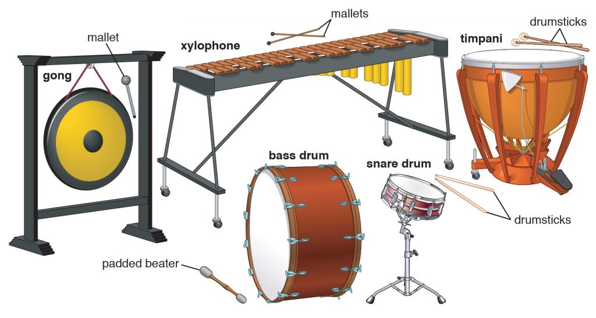

1. Notes
What Are Musical Notes?
Musical notes are the fundamental building blocks of music. They represent sounds of different pitches and durations. The basic musical notes are:
- A, B, C, D, E, F, G (These repeat in higher or lower octaves)
- Each note can be natural (♮), sharp (♯), or flat (♭)
C
D
E
F
G
A
B
C#
D#
F#
G#
A#
Note Durations
- Whole Note (ùÖù) ‚Äì 4 beats
- Half Note (ùÖû) ‚Äì 2 beats
- Quarter Note (ùÖü) ‚Äì 1 beat
- Eighth Note (ùÖ†) ‚Äì ¬Ω beat
- Sixteenth Note (ùÖ°) ‚Äì ¬º beat
Musical Staff and Clefs
- Staff - consists of 5 lines and 4 spaces where notes are written.
- Treble Clef (ùÑû) - used for higher-pitched instruments.
- Bass Clef (ùÑ¢) - used for lower-pitched instruments.
2. Scales
What Are Scales?
Scales are sequences of notes arranged in ascending or descending order. They form the foundation of melodies and harmonies.
Whole and Half Steps
Whole steps and half steps are the basic building blocks of scales and melodies in music. They describe the distance between two notes.
- Half Step (Semitone) - distance between two adjacent keys on a piano (white to black or white to white, if no black key is in between)
- Whole Step (Whole Tone) - distance of skipping one key (whether black or white) in between
Types of Scales
- Major Scale – a bright and happy sound, follows the pattern: W-W-H-W-W-W-H (W = Whole step, H = Half step)
- Example: C Major (C-D-E-F-G-A-B-C)
- Minor Scale - a darker and sadder sound, follows the pattern: W-H-W-W-H-W-W
- Example: A Minor (A-B-C-D-E-F-G-A)
- Chromatic Scale - includes all 12 notes in an octave, moving only by half steps.
- Pentatonic Scale - a five-note scale commonly used in folk, blues, and rock music.
3. Instruments
What Are Musical Instruments?
Musical instruments are tools used to produce sound in a structured and expressive way. They vary widely in construction, playing technique, and sound production. Instruments can be classified into different families based on how they generate sound.
Categories of Musical Instruments
- String Instruments – Produce sound by vibrating strings.
- Woodwind Instruments – Produce sound by blowing air through a tube and using reeds or keys to change pitch.
- Brass Instruments – Produce sound by buzzing the lips into a mouthpiece and changing pitch with valves or slides.
- Percussion Instruments – Produce sound by being struck, shaken, or scraped. 